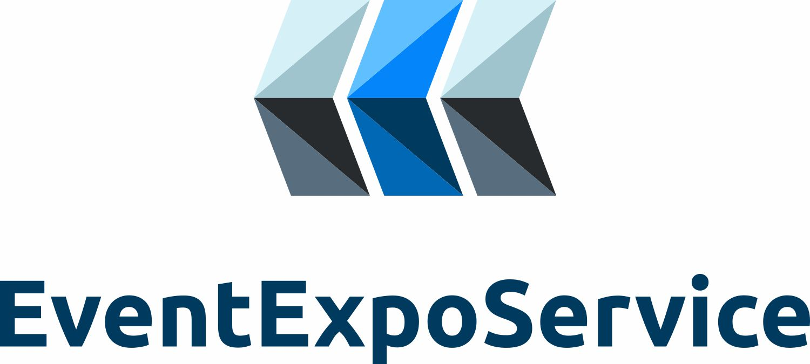

Остальные карточки появятся во вкладке «Состав проекта». Модели, документы и прямые ссылки сохранятся. Любую часть можно отделить обратно.
Объединение сохранится в этом браузере. Для общего доступа скачайте изменения для публикации в настройках.
Часть станет самостоятельным проектом в выбранном разделе.
Перемещение сохранится в этом браузере. Для общего доступа скачайте изменения для публикации в настройках.
Режим просмотра. Изменение проектов отключено.
Список менеджеров хранится в этом браузере.
После размещения сайта вы сможете создавать секретные ссылки и отзывать их. Получателю не потребуется регистрация.
До 50 МБ на файл. Все файлы попадут в выбранный проект.
Импорт сохраняется в этом браузере. Для общего доступа скачайте изменения для публикации в настройках.